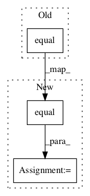

5498cb8bd7e7f3bb10ffe7d2c7ce3b0753df71e2,src/train/retrain.py,,add_evaluation_step,#Any#Any#,752

Before Change
with tf.name_scope("accuracy"):
with tf.name_scope("correct_prediction"):
correct_prediction = tf.equal(tf.argmax(result_tensor, 1), \
tf.argmax(ground_truth_tensor, 1))
with tf.name_scope("accuracy"):
evaluation_step = tf.reduce_mean(tf.cast(correct_prediction, tf.float32))
tf.scalar_summary("accuracy", evaluation_step)
return evaluation_step
After Change
with tf.name_scope("accuracy"):
with tf.name_scope("correct_prediction"):
prediction = tf.argmax(result_tensor, 1)
correct_prediction = tf.equal(
prediction, tf.argmax(ground_truth_tensor, 1))
with tf.name_scope("accuracy"):
evaluation_step = tf.reduce_mean(tf.cast(correct_prediction, tf.float32))
tf.summary.scalar("accuracy", evaluation_step)
return evaluation_step, prediction
In pattern: SUPERPATTERN
Frequency: 3
Non-data size: 3
Instances
Project Name: geometalab/OSMDeepOD
Commit Name: 5498cb8bd7e7f3bb10ffe7d2c7ce3b0753df71e2
Time:
Author: null
File Name: src/train/retrain.py
Class Name:
Method Name: add_evaluation_step
Project Name: reinforceio/tensorforce
Commit Name: a3fe8bdf1c484e390dfe3947cc395372c0187589
Time:
Author: null
File Name: tensorforce/core/models/memory_model.py
Class Name: MemoryModel
Method Name: tf_core_observe
Project Name: marcoancona/DeepExplain
Commit Name: 2fe1f942de95b3fe11acb4881c8f18f65d73bd8e
Time:
Author: null
File Name: deepexplain/tensorflow/methods.py
Class Name:
Method Name: deepexplain_grad